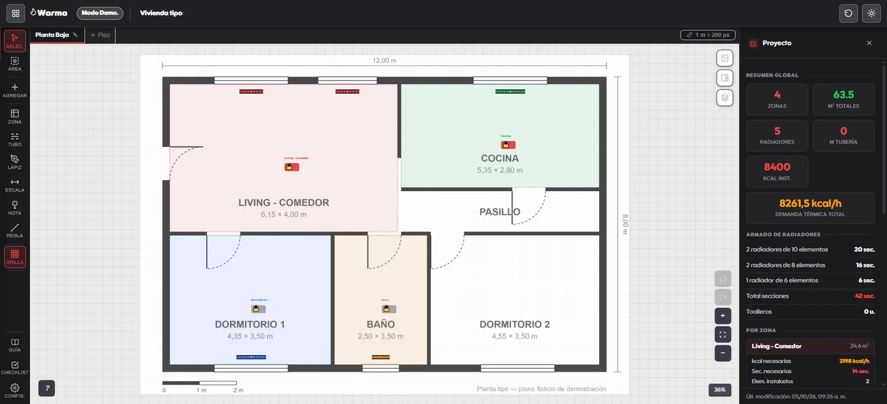
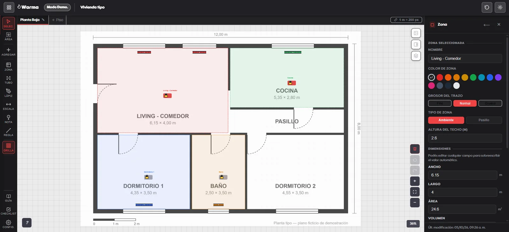
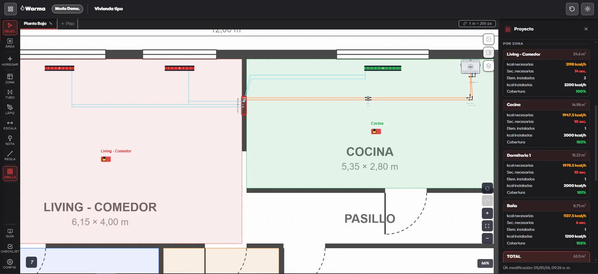
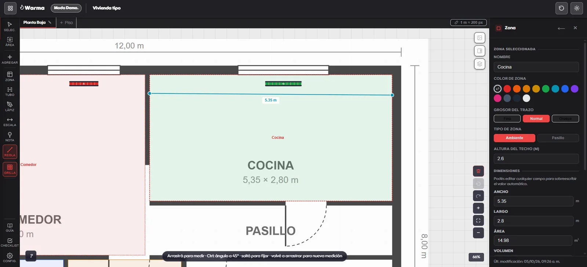

En producciónSheet 01 of 04
In production
Warma
El cálculo térmico que Delmar Calefacción hacía en papel desde hace más de 40 años, convertido en una app.
The heating load calculation Delmar Calefacción had done on paper for over 40 years, turned into an app.
Se carga el plano de la obra, se dibujan los ambientes encima y el cálculo, los materiales y el informe salen solos. Mover un radiador es arrastrar y soltar.
You load the floor plan, draw the rooms on top, and the calculation, materials list and report come out on their own. Moving a radiator is drag and drop.
- RolRole
- Diseño y desarrollo, como autónomoDesign and development, self-employed
- UsuariosUsers
- Equipo comercial de Delmar Calefacción y sus clientesDelmar Calefacción sales team and its customers
Qué resolví · 4What I built · 4
- 01Importa planos PDF y DXF de AutoCAD, con escala por pisoImports PDF and AutoCAD DXF plans, with per-floor scale
- 02Zonas como polígonos: área, volumen y demanda en kcal/hZones as polygons: area, volume and demand in kcal/h
- 03Radiadores, cañerías y losa radiante con materiales calculadosRadiators, piping and radiant floor with calculated materials
- 04Informe PDF en el navegador y link de solo lecturaPDF report in the browser and a read-only link





Editor: plano con zonas, radiadores y el resumen del proyecto. En el celular, el mismo plano.Editor: floor plan with zones, radiators and the project summary. On the phone, the same plan.
Panel de una zona: medidas calculadas que el vendedor puede corregir. En el celular, el resumen global.Zone panel: calculated measurements the salesperson can override. On the phone, the overall summary.
Cañerías trazadas y cobertura de calefacción por ambiente. En el celular, caños y broncería.Routed piping and heating coverage per room. On the phone, pipes and fittings.
Regla para medir sobre el plano. En el celular, el menú radial de herramientas.Ruler for measuring on the plan. On the phone, the radial tool menu.
Informe técnico en PDF generado en el navegador.Technical PDF report generated in the browser.
Cómo funcionaHow it works
- Plano PDF o DXFPDF or DXF floor planSe procesa entero en el navegador (pdfjs-dist, dxf-parser)Processed entirely in the browser (pdfjs-dist, dxf-parser)
- Lógica de cálculo puraPure calculation logicDemanda térmica, geometría, losa radiante y materiales, sin dependencias de UIHeat demand, geometry, radiant floor and materials, with no UI dependencies
- Editor en canvasCanvas editorReact + Konva, estado en Zustand con deshacer por pisoReact + Konva, Zustand state with per-floor undo
- SupabaseProyectos en la nube con RLS, links públicos de solo lecturaCloud projects with RLS, public read-only links
Leer el caso de estudio de WarmaRead the Warma case study
El problemaThe problem
Cada instalación se diseñaba con lápiz sobre el plano impreso: medir ambientes, calcular la demanda, dimensionar radiadores o losa y contar materiales. Llevaba de 3 a 4 horas, y cada cambio obligaba a tachar o reimprimir, sin registro de versiones.
Every installation was designed in pencil on a printed plan: measuring rooms, calculating demand, sizing radiators or radiant floor, and counting materials. It took 3 to 4 hours, and every change meant crossing out or reprinting, with no version history.
Decisiones técnicasTechnical decisions
- Valor calculado con corrección manual. Todo se calcula solo, pero el vendedor puede escribir otro valor encima: digitaliza el criterio de la empresa sin quitarle la última palabra al profesional.
- Lógica separada de la interfaz. El cálculo no depende de React ni de Konva, y eso permite probar que da lo mismo que el método en papel.
- Compartir sin exponer la tabla. El link usa un token y una función SECURITY DEFINER: nadie puede listar proyectos, solo abrir el suyo.
- Sin servidor propio. PDF, planos y cálculo corren en el cliente; Supabase hace de backend.
- Computed values with manual override. Everything is calculated automatically, but the salesperson can type a different value: it digitizes the company's method without taking the final say away from the professional.
- Logic separated from the UI. The calculation does not depend on React or Konva, which makes it possible to test that it matches the paper method.
- Sharing without exposing the table. The link uses a token and a SECURITY DEFINER function: nobody can list projects, only open their own.
- No custom server. PDFs, plans and calculations run on the client; Supabase acts as the backend.
DesafíosChallenges
- Geometría propia: Shoelace para áreas, recorte Sutherland-Hodgman, scanline para exclusiones, A* sobre grilla y simplificación Ramer-Douglas-Peucker.
- Compatibilidad: funciones que migran formatos viejos para que los proyectos guardados no se rompan al actualizar.
- Un bug que deshacía varias acciones juntas, resuelto con instantáneas completas por piso y pruebas que lo fijan.
- Informes robustos: si una imagen tarda más de 8 segundos, el PDF se genera igual y avisa.
- Custom geometry: Shoelace for areas, Sutherland-Hodgman clipping, scanline for exclusions, A* on a grid, and Ramer-Douglas-Peucker simplification.
- Compatibility: functions that migrate old formats so saved projects do not break after updates.
- A bug that undid several actions at once, fixed with full per-floor snapshots and tests that lock it down.
- Robust reports: if an image takes longer than 8 seconds, the PDF is still generated with a warning.